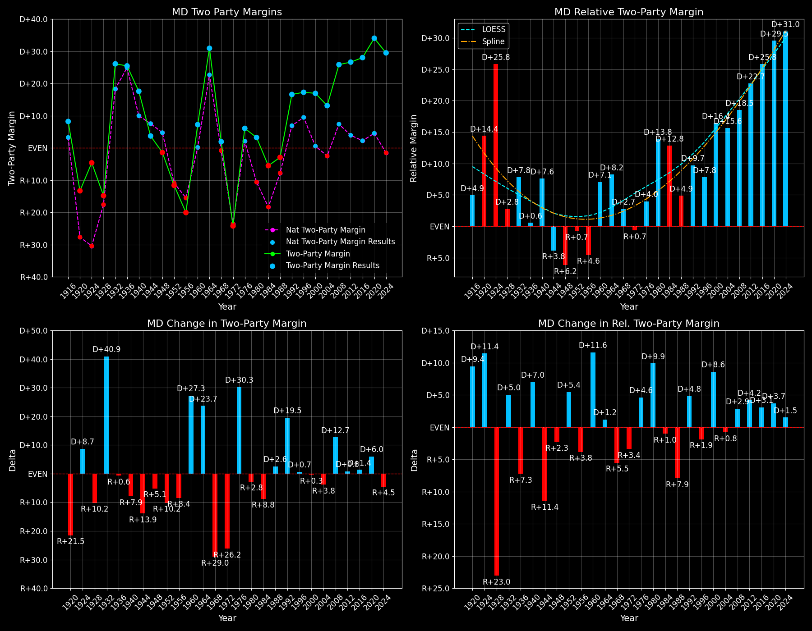

Maryland (MD) — Statewide

Margins · 3rd-Party share · Pres. deltas

Relative margins · Relative 3rd-Party · Rel. deltas
Maryland (MD) — Total Data
| Year | D | R | State Margin | Nat. Margin | Rel. Margin | Total votes | EVs |
|---|---|---|---|---|---|---|---|
| 1916 | 138,359(52.8%) | 117,347(44.8%) | D+8.0 | D+3.1 | D+4.9 | 262,039 | 8 |
| 1920 | 180,626(42.2%)(Δ 42,267) | 236,117(55.1%)(Δ 118,770) | R+13.0(Δ R+21.0) | R+26.2(Δ R+29.3) | D+13.2(Δ D+8.3) | 428,443(Δ 166,404) | 8 |
| 1924 | 148,072(41.3%)(Δ -32,554) | 162,414(45.3%)(Δ -73,703) | R+4.0(Δ D+9.0) | R+25.2(Δ D+1.0) | D+21.2(Δ D+8.0) | 358,630(Δ -69,813) | 8 |
| 1928 | 223,626(42.3%)(Δ 75,554) | 301,479(57.1%)(Δ 139,065) | R+14.7(Δ R+10.7) | R+17.4(Δ D+7.8) | D+2.7(Δ R+18.5) | 528,348(Δ 169,718) | 8 |
| 1932 | 314,314(61.5%)(Δ 90,688) | 184,184(36.0%)(Δ -117,295) | D+25.5(Δ D+40.2) | D+17.8(Δ D+35.2) | D+7.7(Δ D+5.0) | 511,054(Δ -17,294) | 8 |
| 1936 | 389,612(62.3%)(Δ 75,298) | 231,435(37.0%)(Δ 47,251) | D+25.3(Δ R+0.2) | D+24.3(Δ D+6.5) | D+1.1(Δ R+6.6) | 624,896(Δ 113,842) | 8 |
| 1940 | 384,546(58.3%)(Δ -5,066) | 269,534(40.8%)(Δ 38,099) | D+17.4(Δ R+7.9) | D+10.0(Δ R+14.3) | D+7.5(Δ D+6.4) | 660,117(Δ 35,221) | 8 |
| 1944 | 315,490(51.9%)(Δ -69,056) | 292,949(48.1%)(Δ 23,415) | D+3.7(Δ R+13.7) | D+7.5(Δ R+2.5) | R+3.8(Δ R+11.3) | 608,439(Δ -51,678) | 8 |
| 1948 | 286,521(48.0%)(Δ -28,969) | 294,814(49.4%)(Δ 1,865) | R+1.4(Δ R+5.1) | D+4.5(Δ R+3.0) | R+5.9(Δ R+2.1) | 596,735(Δ -11,704) | 8 |
| 1952 | 395,337(43.8%)(Δ 108,816) | 499,424(55.4%)(Δ 204,610) | R+11.5(Δ R+10.1) | R+10.9(Δ R+15.3) | R+0.7(Δ D+5.2) | 902,074(Δ 305,339) | 9 |
| 1956 | 372,613(40.0%)(Δ -22,724) | 559,738(60.0%)(Δ 60,314) | R+20.1(Δ R+8.5) | R+15.4(Δ R+4.5) | R+4.7(Δ R+4.0) | 932,351(Δ 30,277) | 9 |
| 1960 | 565,808(53.6%)(Δ 193,195) | 489,538(46.4%)(Δ -70,200) | D+7.2(Δ D+27.3) | D+0.2(Δ D+15.6) | D+7.1(Δ D+11.7) | 1,055,349(Δ 122,998) | 9 |
| 1964 | 730,912(65.5%)(Δ 165,104) | 385,495(34.5%)(Δ -104,043) | D+30.9(Δ D+23.7) | D+22.6(Δ D+22.4) | D+8.4(Δ D+1.3) | 1,116,457(Δ 61,108) | 10 |
| 1968 | 538,310(43.6%)(Δ -192,602) | 517,995(41.9%)(Δ 132,500) | D+1.6(Δ R+29.3) | R+0.7(Δ R+23.3) | D+2.3(Δ R+6.0) | 1,235,039(Δ 118,582) | 10 |
| 1972 | 505,781(37.4%)(Δ -32,529) | 829,305(61.3%)(Δ 311,310) | R+23.9(Δ R+25.5) | R+23.1(Δ R+22.4) | R+0.8(Δ R+3.1) | 1,353,812(Δ 118,773) | 10 |
| 1976 | 759,612(53.0%)(Δ 253,831) | 672,661(47.0%)(Δ -156,644) | D+6.1(Δ D+30.0) | D+2.1(Δ D+25.2) | D+4.0(Δ D+4.8) | 1,432,273(Δ 78,461) | 10 |
| 1980 | 726,161(47.1%)(Δ -33,451) | 680,606(44.2%)(Δ 7,945) | D+3.0(Δ R+3.1) | R+9.7(Δ R+11.8) | D+12.7(Δ D+8.7) | 1,540,496(Δ 108,223) | 10 |
| 1984 | 787,935(47.0%)(Δ 61,774) | 879,918(52.5%)(Δ 199,312) | R+5.5(Δ R+8.4) | R+18.2(Δ R+8.5) | D+12.7(Δ D+0.0) | 1,675,873(Δ 135,377) | 10 |
| 1988 | 826,304(48.2%)(Δ 38,369) | 876,167(51.1%)(Δ -3,751) | R+2.9(Δ D+2.6) | R+7.7(Δ D+10.5) | D+4.8(Δ R+7.9) | 1,714,358(Δ 38,485) | 10 |
| 1992 | 988,571(49.8%)(Δ 162,267) | 707,094(35.6%)(Δ -169,073) | D+14.2(Δ D+17.1) | D+5.6(Δ D+13.3) | D+8.6(Δ D+3.8) | 1,985,046(Δ 270,688) | 10 |
| 1996 | 966,207(54.3%)(Δ -22,364) | 681,530(38.3%)(Δ -25,564) | D+16.0(Δ D+1.8) | D+8.5(Δ D+3.0) | D+7.5(Δ R+1.2) | 1,780,870(Δ -204,176) | 10 |
| 2000 | 1,145,782(56.6%)(Δ 179,575) | 813,797(40.2%)(Δ 132,267) | D+16.4(Δ D+0.4) | D+0.5(Δ R+8.0) | D+15.9(Δ D+8.4) | 2,025,480(Δ 244,610) | 10 |
| 2004 | 1,334,493(55.9%)(Δ 188,711) | 1,024,703(42.9%)(Δ 210,906) | D+13.0(Δ R+3.4) | R+2.5(Δ R+3.0) | D+15.4(Δ R+0.4) | 2,386,678(Δ 361,198) | 10 |
| 2008 | 1,629,467(61.9%)(Δ 294,974) | 959,862(36.5%)(Δ -64,841) | D+25.4(Δ D+12.5) | D+7.3(Δ D+9.7) | D+18.2(Δ D+2.7) | 2,631,596(Δ 244,918) | 10 |
| 2012 | 1,677,844(62.0%)(Δ 48,377) | 971,869(35.9%)(Δ 12,007) | D+26.1(Δ D+0.6) | D+3.9(Δ R+3.4) | D+22.2(Δ D+4.0) | 2,707,327(Δ 75,731) | 10 |
| 2016 | 1,677,928(60.3%)(Δ 84) | 943,169(33.9%)(Δ -28,700) | D+26.4(Δ D+0.3) | D+2.1(Δ R+1.8) | D+24.3(Δ D+2.1) | 2,781,446(Δ 74,119) | 10 |
| 2020 | 1,985,023(65.4%)(Δ 307,095) | 976,414(32.2%)(Δ 33,245) | D+33.2(Δ D+6.8) | D+4.5(Δ D+2.4) | D+28.8(Δ D+4.4) | 3,037,030(Δ 255,584) | 10 |
| 2024 | 1,902,577(62.6%)(Δ -82,446) | 1,035,550(34.1%)(Δ 59,136) | D+28.5(Δ R+4.7) | R+1.5(Δ R+5.9) | D+30.0(Δ D+1.3) | 3,038,334(Δ 1,304) | 10 |
Column explanations
- Δ
- Change (delta) in the value from the previous election year.
- Year
- Election year.
- D
- Number of votes for the Democratic candidate (raw count(pct%)).
- R
- Number of votes for the Republican candidate (raw count(pct%)).
- State Margin
- Margin between the two major-party candidates, including third-party votes ((D - R)/total).
- Nat. Margin
- The national presidential margin for that year, including third-party votes ((D_total - R_total)/total_votes).
- Rel. Margin
- The presidential margin relative to the national presidential margin (Margin - Nat. Margin).
- Total votes
- Total voter turnout or ballots cast (when provided).
- EVs
- Number of electoral votes allocated to this state or unit.
Maryland (MD) — Third-Party Data
| Year | D | R | Other votes | State 3rd-Party Share | 3rd-Party Nat. Share | 3rd-Party Rel. Share |
|---|---|---|---|---|---|---|
| 1916 | 138,359(52.8%) | 117,347(44.8%) | 6,333(2.4%) | 2.42% | 4.64% | -2.23% |
| 1920 | 180,626(42.2%)(Δ 42,267) | 236,117(55.1%)(Δ 118,770) | 11,700(2.7%) | 2.73% | 5.53% | -2.80% |
| 1924 | 148,072(41.3%)(Δ -32,554) | 162,414(45.3%)(Δ -73,703) | 48,144(13.4%) | 13.42% | 17.14% | -3.72% |
| 1928 | 223,626(42.3%)(Δ 75,554) | 301,479(57.1%)(Δ 139,065) | 3,243(0.6%) | 0.61% | 0.99% | -0.38% |
| 1932 | 314,314(61.5%)(Δ 90,688) | 184,184(36.0%)(Δ -117,295) | 12,556(2.5%) | 2.46% | 2.94% | -0.48% |
| 1936 | 389,612(62.3%)(Δ 75,298) | 231,435(37.0%)(Δ 47,251) | 3,849(0.6%) | 0.62% | 2.66% | -2.04% |
| 1940 | 384,546(58.3%)(Δ -5,066) | 269,534(40.8%)(Δ 38,099) | 6,037(0.9%) | 0.91% | 0.48% | 0.43% |
| 1944 | 315,490(51.9%)(Δ -69,056) | 292,949(48.1%)(Δ 23,415) | 0(0.0%) | 0.00% | 0.72% | -0.72% |
| 1948 | 286,521(48.0%)(Δ -28,969) | 294,814(49.4%)(Δ 1,865) | 15,400(2.6%) | 2.58% | 5.38% | -2.79% |
| 1952 | 395,337(43.8%)(Δ 108,816) | 499,424(55.4%)(Δ 204,610) | 7,313(0.8%) | 0.81% | 0.49% | 0.32% |
| 1956 | 372,613(40.0%)(Δ -22,724) | 559,738(60.0%)(Δ 60,314) | 0(0.0%) | 0.00% | 0.67% | -0.67% |
| 1960 | 565,808(53.6%)(Δ 193,195) | 489,538(46.4%)(Δ -70,200) | 3(0.0%) | 0.00% | 0.73% | -0.73% |
| 1964 | 730,912(65.5%)(Δ 165,104) | 385,495(34.5%)(Δ -104,043) | 50(0.0%) | 0.00% | 0.48% | -0.47% |
| 1968 | 538,310(43.6%)(Δ -192,602) | 517,995(41.9%)(Δ 132,500) | 178,734(14.5%) | 14.47% | 13.86% | 0.61% |
| 1972 | 505,781(37.4%)(Δ -32,529) | 829,305(61.3%)(Δ 311,310) | 18,726(1.4%) | 1.38% | 1.80% | -0.42% |
| 1976 | 759,612(53.0%)(Δ 253,831) | 672,661(47.0%)(Δ -156,644) | 0(0.0%) | 0.00% | 1.90% | -1.90% |
| 1980 | 726,161(47.1%)(Δ -33,451) | 680,606(44.2%)(Δ 7,945) | 133,729(8.7%) | 8.68% | 8.24% | 0.44% |
| 1984 | 787,935(47.0%)(Δ 61,774) | 879,918(52.5%)(Δ 199,312) | 8,020(0.5%) | 0.48% | 0.67% | -0.19% |
| 1988 | 826,304(48.2%)(Δ 38,369) | 876,167(51.1%)(Δ -3,751) | 11,887(0.7%) | 0.69% | 0.98% | -0.29% |
| 1992 | 988,571(49.8%)(Δ 162,267) | 707,094(35.6%)(Δ -169,073) | 289,381(14.6%) | 14.58% | 19.55% | -4.97% |
| 1996 | 966,207(54.3%)(Δ -22,364) | 681,530(38.3%)(Δ -25,564) | 133,133(7.5%) | 7.48% | 10.05% | -2.57% |
| 2000 | 1,145,782(56.6%)(Δ 179,575) | 813,797(40.2%)(Δ 132,267) | 65,901(3.3%) | 3.25% | 3.75% | -0.49% |
| 2004 | 1,334,493(55.9%)(Δ 188,711) | 1,024,703(42.9%)(Δ 210,906) | 27,482(1.2%) | 1.15% | 1.00% | 0.15% |
| 2008 | 1,629,467(61.9%)(Δ 294,974) | 959,862(36.5%)(Δ -64,841) | 42,267(1.6%) | 1.61% | 1.42% | 0.18% |
| 2012 | 1,677,844(62.0%)(Δ 48,377) | 971,869(35.9%)(Δ 12,007) | 57,614(2.1%) | 2.13% | 1.73% | 0.40% |
| 2016 | 1,677,928(60.3%)(Δ 84) | 943,169(33.9%)(Δ -28,700) | 160,349(5.8%) | 5.76% | 5.73% | 0.04% |
| 2020 | 1,985,023(65.4%)(Δ 307,095) | 976,414(32.2%)(Δ 33,245) | 75,593(2.5%) | 2.49% | 1.84% | 0.64% |
| 2024 | 1,902,577(62.6%)(Δ -82,446) | 1,035,550(34.1%)(Δ 59,136) | 100,207(3.3%) | 3.30% | 1.88% | 1.42% |
Column explanations
- Year
- Election year.
- D
- Number of votes for the Democratic candidate (raw count(pct%)).
- R
- Number of votes for the Republican candidate (raw count(pct%)).
- Other votes
- Number of votes for third-party (other) candidates (raw count(pct%)).
- State 3rd-Party Share
- Share of the vote received by third-party (other) candidates.
- 3rd-Party Nat. Share
- The national third-party share for that year (3rd-Party votes / total votes).
- 3rd-Party Rel. Share
- Third-party share relative to the national third-party share (3rd-Party share - Nat. 3rd-Party share).

Two-party margins · relative · deltas
Maryland (MD) — Two-Party Data
| Year | D | R | 2-Party Margin | 2-Party Nat. Margin | 2-Party Rel. Margin | EVs |
|---|---|---|---|---|---|---|
| 1916 | 138,359(54.1%) | 117,347(45.9%) | D+8.2 | D+3.3 | D+4.9 | 8 |
| 1920 | 180,626(43.3%)(Δ 42,267) | 236,117(56.7%)(Δ 118,770) | R+13.3(Δ R+21.5) | R+27.7(Δ R+31.0) | D+14.4(Δ D+9.4) | 8 |
| 1924 | 148,072(47.7%)(Δ -32,554) | 162,414(52.3%)(Δ -73,703) | R+4.6(Δ D+8.7) | R+30.4(Δ R+2.7) | D+25.8(Δ D+11.4) | 8 |
| 1928 | 223,626(42.6%)(Δ 75,554) | 301,479(57.4%)(Δ 139,065) | R+14.8(Δ R+10.2) | R+17.6(Δ D+12.8) | D+2.8(Δ R+23.0) | 8 |
| 1932 | 314,314(63.1%)(Δ 90,688) | 184,184(36.9%)(Δ -117,295) | D+26.1(Δ D+40.9) | D+18.3(Δ D+35.9) | D+7.8(Δ D+5.0) | 8 |
| 1936 | 389,612(62.7%)(Δ 75,298) | 231,435(37.3%)(Δ 47,251) | D+25.5(Δ R+0.6) | D+24.9(Δ D+6.6) | D+0.6(Δ R+7.3) | 8 |
| 1940 | 384,546(58.8%)(Δ -5,066) | 269,534(41.2%)(Δ 38,099) | D+17.6(Δ R+7.9) | D+10.0(Δ R+14.9) | D+7.6(Δ D+7.0) | 8 |
| 1944 | 315,490(51.9%)(Δ -69,056) | 292,949(48.1%)(Δ 23,415) | D+3.7(Δ R+13.9) | D+7.5(Δ R+2.5) | R+3.8(Δ R+11.4) | 8 |
| 1948 | 286,521(49.3%)(Δ -28,969) | 294,814(50.7%)(Δ 1,865) | R+1.4(Δ R+5.1) | D+4.7(Δ R+2.8) | R+6.2(Δ R+2.3) | 8 |
| 1952 | 395,337(44.2%)(Δ 108,816) | 499,424(55.8%)(Δ 204,610) | R+11.6(Δ R+10.2) | R+10.9(Δ R+15.6) | R+0.7(Δ D+5.4) | 9 |
| 1956 | 372,613(40.0%)(Δ -22,724) | 559,738(60.0%)(Δ 60,314) | R+20.1(Δ R+8.4) | R+15.5(Δ R+4.6) | R+4.6(Δ R+3.8) | 9 |
| 1960 | 565,808(53.6%)(Δ 193,195) | 489,538(46.4%)(Δ -70,200) | D+7.2(Δ D+27.3) | D+0.2(Δ D+15.7) | D+7.1(Δ D+11.6) | 9 |
| 1964 | 730,912(65.5%)(Δ 165,104) | 385,495(34.5%)(Δ -104,043) | D+30.9(Δ D+23.7) | D+22.7(Δ D+22.5) | D+8.2(Δ D+1.2) | 10 |
| 1968 | 538,310(51.0%)(Δ -192,602) | 517,995(49.0%)(Δ 132,500) | D+1.9(Δ R+29.0) | R+0.8(Δ R+23.5) | D+2.7(Δ R+5.5) | 10 |
| 1972 | 505,781(37.9%)(Δ -32,529) | 829,305(62.1%)(Δ 311,310) | R+24.2(Δ R+26.2) | R+23.6(Δ R+22.8) | R+0.7(Δ R+3.4) | 10 |
| 1976 | 759,612(53.0%)(Δ 253,831) | 672,661(47.0%)(Δ -156,644) | D+6.1(Δ D+30.3) | D+2.1(Δ D+25.7) | D+4.0(Δ D+4.6) | 10 |
| 1980 | 726,161(51.6%)(Δ -33,451) | 680,606(48.4%)(Δ 7,945) | D+3.2(Δ R+2.8) | R+10.6(Δ R+12.7) | D+13.8(Δ D+9.9) | 10 |
| 1984 | 787,935(47.2%)(Δ 61,774) | 879,918(52.8%)(Δ 199,312) | R+5.5(Δ R+8.8) | R+18.3(Δ R+7.7) | D+12.8(Δ R+1.0) | 10 |
| 1988 | 826,304(48.5%)(Δ 38,369) | 876,167(51.5%)(Δ -3,751) | R+2.9(Δ D+2.6) | R+7.8(Δ D+10.5) | D+4.9(Δ R+7.9) | 10 |
| 1992 | 988,571(58.3%)(Δ 162,267) | 707,094(41.7%)(Δ -169,073) | D+16.6(Δ D+19.5) | D+6.9(Δ D+14.7) | D+9.7(Δ D+4.8) | 10 |
| 1996 | 966,207(58.6%)(Δ -22,364) | 681,530(41.4%)(Δ -25,564) | D+17.3(Δ D+0.7) | D+9.5(Δ D+2.6) | D+7.8(Δ R+1.9) | 10 |
| 2000 | 1,145,782(58.5%)(Δ 179,575) | 813,797(41.5%)(Δ 132,267) | D+16.9(Δ R+0.3) | D+0.5(Δ R+8.9) | D+16.4(Δ D+8.6) | 10 |
| 2004 | 1,334,493(56.6%)(Δ 188,711) | 1,024,703(43.4%)(Δ 210,906) | D+13.1(Δ R+3.8) | R+2.5(Δ R+3.0) | D+15.6(Δ R+0.8) | 10 |
| 2008 | 1,629,467(62.9%)(Δ 294,974) | 959,862(37.1%)(Δ -64,841) | D+25.9(Δ D+12.7) | D+7.4(Δ D+9.9) | D+18.5(Δ D+2.9) | 10 |
| 2012 | 1,677,844(63.3%)(Δ 48,377) | 971,869(36.7%)(Δ 12,007) | D+26.6(Δ D+0.8) | D+3.9(Δ R+3.4) | D+22.7(Δ D+4.2) | 10 |
| 2016 | 1,677,928(64.0%)(Δ 84) | 943,169(36.0%)(Δ -28,700) | D+28.0(Δ D+1.4) | D+2.2(Δ R+1.7) | D+25.8(Δ D+3.1) | 10 |
| 2020 | 1,985,023(67.0%)(Δ 307,095) | 976,414(33.0%)(Δ 33,245) | D+34.1(Δ D+6.0) | D+4.5(Δ D+2.3) | D+29.5(Δ D+3.7) | 10 |
| 2024 | 1,902,577(64.8%)(Δ -82,446) | 1,035,550(35.2%)(Δ 59,136) | D+29.5(Δ R+4.5) | R+1.5(Δ R+6.0) | D+31.0(Δ D+1.5) | 10 |
Column explanations
- Δ
- Change (delta) in the value from the previous election year.
- Year
- Election year.
- D
- Number of votes for the Democratic candidate (raw count(pct%)).
- R
- Number of votes for the Republican candidate (raw count(pct%)).
- 2-Party Margin
- Margin between the two major-party candidates, ignoring third-party votes ((D - R)/(D + R)).
- 2-Party Nat. Margin
- The national presidential margin for that year, including third-party votes ((D_total - R_total)/total_votes).
- 2-Party Rel. Margin
- The presidential margin relative to the national presidential margin (Margin - Nat. Margin).
- EVs
- Number of electoral votes allocated to this state or unit.